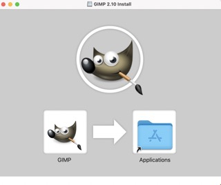
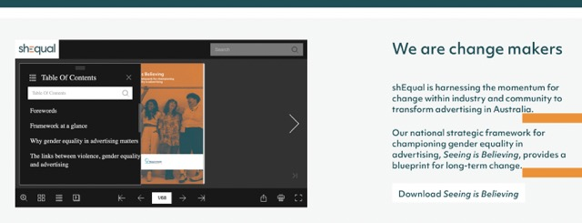
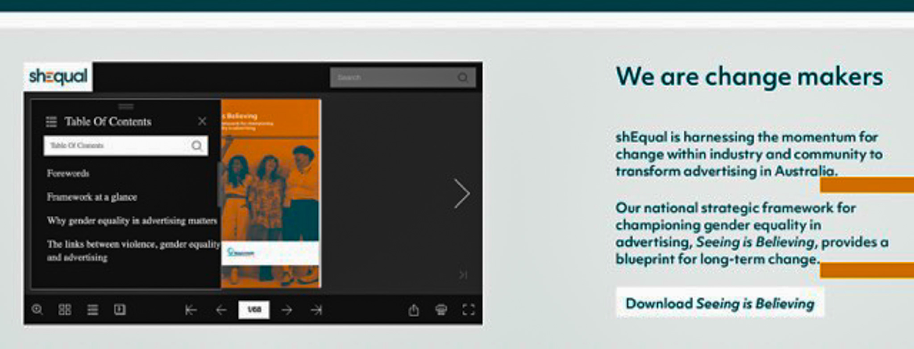
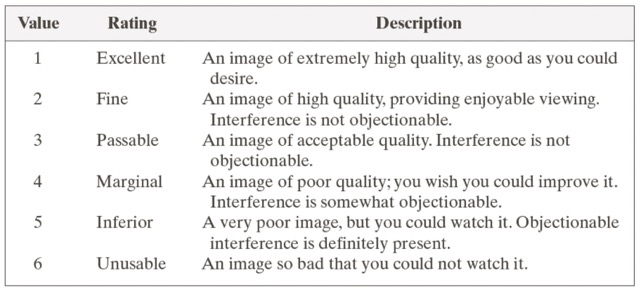
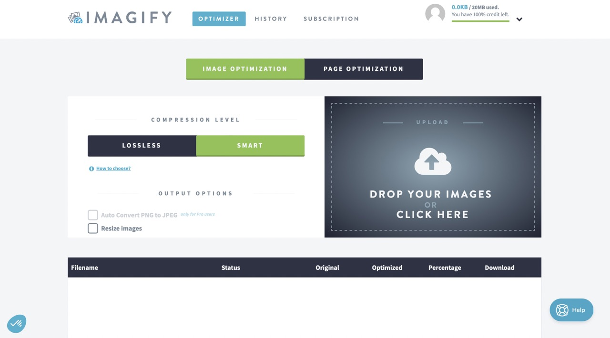

Week 7
IL task 1 - the stages of the creative process
My answer will use the outline given in the text "5 stages of creativity"
Preparation
Feminism is part of my upbringing and I'm a big fan of feminist essays. So it's a sensitive subject for me, but also one with a variety of sub-topics to develop.
Incubation
I was sure I wanted to tackle the subject of feminism but the angle to choose was more complicated. Wanting to use different media, I wanted to use materials that highlighted the representation of women. What's more, I'm a communications and marketing student at my host university. So that's one of the reasons why a link was made with advertising, as it's something I've been studying for nearly 5 years.
Ideation
So I started looking at the representation of women in advertising, and in particular femvertising. In other words, feminist advertising.
Evaluation
After my interview with the teacher, it turned out that I needed to refine my subject because feminist advertising can be a broad topic. She asked me to choose a particular type of object, so I chose children's advertising because it can still be very sexist.
Implementation
So I chose to contrast sexist and feminist children's toy advertising.
IL task 2 - Analyse the use of image on the web
Websites relevant for my topic
We can use audio to create an ambiance or to illustrate better what you say.
- Let toys be toys : This website show some picture about the toys advertising and retailers but is not the best to find good images. The site also has a twitter account where it publishes more images.
- Campaign live : This website includes video and image advertising. Nevertheless, the campaigns look fairly recent. So I couldn't use just this one. Moreover, I found just 10 articles which is not a lot.
- Ads of the world : This website also includes some fairly recent advertising, but there is more than on the previous site.
- Pinterst: Pinterest is a great place to find images. On it you can find several periods and several styles. However, you need to be careful about copyright because it's not always clear.
This website that deals most with my subject makes very little use of images. For example, on the home page, you have to scroll down to see an image. The larger one shows children, highlighting the subject. The other images are linked to the articles, which generally have more images to illustrate what is being said. For example, on the home page, you have to scroll down to see an image. The larger one shows children, highlighting the subject. The other images are linked to the articles, which generally have more images to illustrate what is being said.
IL task 3 - Generate a portfolio of images
I've already created my moodboard with the images I need to modify once I've refined my subject. I used the websites mentioned above to find my images.
In my website, images will play an important role, as my analyses will be based on a photo or video. After searching for images, I also realised that the packaging could be sexist. So I also included the packaging and catalogues for the children's games. What's more, packaging can be seen as a form of advertising.
Update of my Moodboard
There is a screen of my Moodboard before the update
There is a screen of my Moodboard now :
Lab task - Editing digital images
As you can see, I've installed Gimp on my computer.
Unfortunately, I have trouble with Gimp's interface, which I find complicated and rather blurred. So for my image resolution I preferred to use 2 applications. I'm already used to using Lightroom and I'm more used to the interface, so that's why I prefer to use this application for my modifications. There is an example of modification that I made for one of the image in my website
| Before | After |
|  |  |
Here's how I do it using LightRoom.
As the images were of poor quality and I didn't need to change the colourimetry, I decided to use the website : Imagify This site allows me to improve the quality but also to reduce the size of my images so that I don't have to deal with an update problem on my GitHub. So I analysed my website and all the images I could include. I created a folder with all the images I considered inferior to "passable".
 For the annotations on my screenshots, like the image below, I used the Canva application